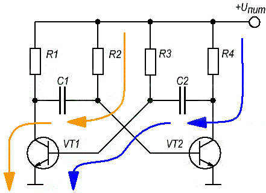
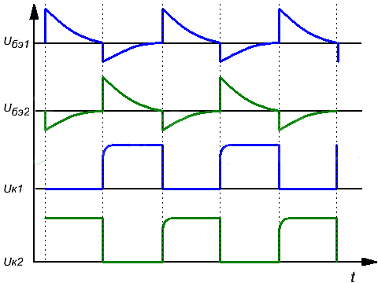
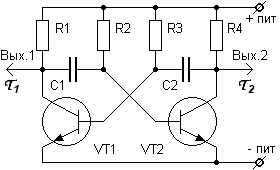
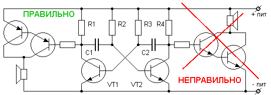
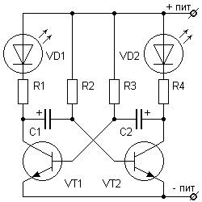
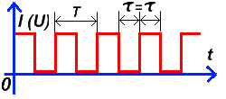

Симметричный мультивибратор
Мультивибратор на транзисторах представляет собой генератор импульсов практически прямоугольной формы, созданный в виде усилительного элемента с цепью положительно-обратной связью. Существуют два типа мультивибраторов:
- Автоколебательные мультивибраторы, которые не имеют устойчивого состояния.
- Ждущие мультивибраторы (одновибраторы), которые обладают состоянием устойчивого равновесия.
Автоколебательные мультивибраторы делятся на:
- симметричные – у них транзисторы одинаковы и также одинаковы параметры симметричных элементов. В результате этого две части периода колебаний равны между собой, а скважность равна двум.
- несимметричные - параметры элементов не равны.
В данной статье рассматривается симметричный мультивибратор.
Принцип работы симметричный мультивибратора на транзисторах
Принцип работы симметричного мультивибратора рассмотрим на примере схемы на рис. 1.

Рис. 1 - Схема мультивибратора на транзисторах
По сути своей симметричный мультивибратор представляет собой двухкаскадный усилитель, причем схема построена, так что выход первого каскада соединен с входом второго. Вследствие этого после подачи питания на схему, обязательно получается, так что один из биполярных транзисторов открыт, а другой находится в закрытом состоянии.
Допустим, что транзистор VT1 открыт и находится в состоянии насыщения током, идущим через резистор R3, а транзистор VT2 - закрыт. Теперь в схеме происходят процессы, связанные с перезарядом конденсаторов C1 и C2. Первоначально конденсатор C2 абсолютно разряжен и вслед за насыщением VT1 происходит постепенная зарядка его через резистор R4.
Поскольку конденсатор C2 шунтирует коллектор-эммитерный переход транзистора VT2 через эммитерный переход транзистора VT1, то скорость его заряда определяет скорость изменения напряжения на коллекторе VT2. После заряда C2 транзистор VT2 закрывается. Продолжительность этого процесса (длительность фронта напряжения коллектора) можно вычислить по формуле:
t1a = 2,3·R1·C1
Также в работе схемы протекает и второй процесс, связанный с разрядом ранее заряженного конденсатора C1. Его разряд происходит через транзистор VT1, резистор R2 и источник питания. По мере разряда конденсатора на базе VT1 появляется положительный потенциал, и он начинает открываться. Данный процесс заканчивается после полного разряда C1. Длительность этого процесса (импульса) равна:
t2a = 0,7·R2·C1
По прошествии времени t2a транзистор VT1 будет заперт, а транзистор VT2 будет в насыщении. После этого процесс повторится по аналогичной схеме и длительность интервалов следующих процессов можно рассчитать также по формулам:
t1b = 2,3·R4·C2, t2b = 0,7·R3·C2
Для определения частоты колебаний мультивибратора справедливо следующее выражение:
f = 1/ (t2a+t2b

Рис. 2 - Временные диаграммы работы мультивибратора на транзисторах
Способы подключения нагрузки к симметричному мультивибратору
Прямоугольные импульсы снимаются с двух точек симметричного мультивибратора – коллекторов транзисторов. Когда на одном коллекторе присутствует «высокий» потенциал, то на другом коллекторе – «низкий» потенциал (он отсутствует), и наоборот – когда на одном выходе «низкий» потенциал, то на другом - «высокий».

Рис. 3 - Выходы симметричного мультивибратора
Нагрузка мультивибратора должна подключаться параллельно одному из коллекторных резисторов, но ни в коем случае не параллельно транзисторному переходу коллектор-эмиттер. Нельзя шунтировать транзистор нагрузкой. Если это условие не выполнять, то как минимум - изменится длительность импульсов, а как максимум – мультивибратор не будет работать. На рисунке 4 показано, как подключить нагрузку правильно.

Рис. 4 - Подключение нагрузки к симметричному мультивибратору
Для того, чтобы нагрузка не влияла на сам мультивибратор, она должна иметь достаточное входное сопротивление. Для этого обычно применяют буферные транзисторные каскады.
На рис. 4 показано подключение низкоомной динамической головки к мультивибратору. Добавочный резистор повышает входное сопротивление буферного каскада, и тем самым исключает влияние буферного каскада на транзистор мультивибратора. Его значение должно не менее, чем в 10 раз превышать значение коллекторного резистора. Подключение двух транзисторов по схеме «составного транзистора» значительно усиливает выходной ток. При этом, правильным является подключение базово-эмиттерной цепи буферного каскада параллельно коллекторному резистору мультивибратора, а не параллельно коллекторно-эмиттерному переходу транзистора мультивибратора.
Для подключения к мультивибратору высокоомной динамической головки буферный каскад не нужен. Головка подключается вместо одного из коллекторных резисторов. Должно выполняться единственное условие – ток, идущий через динамическую головку не должен превышать максимальный ток коллектора транзистора.
Для подключения к мультивибратору обычных светодиодов (для «мигалки») буферные каскады не требуются. Их можно подключить последовательно с коллекторными резисторами. Связано это с тем, что ток светодиода мал, и падение напряжения на нём во время работы не более одного вольта. Поэтому они не оказывают никакого влияния на работу мультивибратора. Правда это не относится к сверхярким светодиодам, у которых и рабочий ток выше, и падение напряжения может быть от 3,5 до 10 В. Но в этом случае есть выход – увеличить напряжение питания и использовать транзисторы с большой мощностью, обеспечивающей достаточный ток коллектора.

Рис. 5 - Подключение светодиодов к мультивибратору
Оксидные (электролитические) конденсаторы подключаются плюсами к коллекторам транзисторов. Связано это с тем, что на базах биполярных транзисторов напряжение не поднимается выше 0,7 В относительно эмиттера, а в нашем случае эмиттеры – это минус питания. А вот на коллекторах транзисторов напряжение изменяется почти от нуля, до напряжения источника питания. Оксидные конденсаторы не способны выполнять свою функцию при их подключении обратной полярностью. Естественно, если вы будете применять транзисторы другой структуры (не n-p-n, a p-n-p структуры), то кроме изменения полярности источника питания, необходимо развернуть светодиоды катодами «вверх по схеме», а конденсаторы – плюсами к базам транзисторов.
Влияние параметров элементов мультивибратора на частоту генерации
При правильном расчёте мультивибратора, сопротивление коллекторных резисторов должно быть меньше базовых резисторов, т.к. коллекторные резисторы обеспечивают быстрый заряд конденсаторов. . Длительность между переключениями (частота мультивибратора) определяется «медленным» перезарядом конденсаторов. Время перезаряда определяется номиналами RC цепочек – базовых резисторов и конденсаторов (R2C1 и R3C2).
Мультивибратор может вырабатывать как симметричные, так и не симметричные по длительности выходные импульсы. Длительность импульса (высокого уровня) на коллекторе VT1 определяется номиналами R3 и C2, а длительность импульса (высокого уровня) на коллекторе VT2 определяется номиналами R2 и C1.
Длительность перезаряда τи (в секундах) конденсаторов определяется формулой:
τи = RC
где
R – сопротивление резистора (Ом),
С – ёмкость конденсатора в (Фарада).
Таким образом:
τ1 = R3C2, τ2 = R2C1
При равенстве R2=R3 и С1=С2, на выходах мультивибратора будет «меандр» - прямоугольные импульсы с длительностью равной паузам между импульсами (рис. 6).

Рис. 6 - Меандр
Полный период колебания мультивибратора T равен сумме длительностей импульса и паузы:
T = τ1 +τ2
Частота колебаний f (Гц) связана с периодом T (сек) через соотношение:
f=1/T
Источники
joyta.ru - Мультивибратор на транзисторах. Описание работы
meanders.ru - Симметричный мультивибратор, расчёт и схема мультивибратора